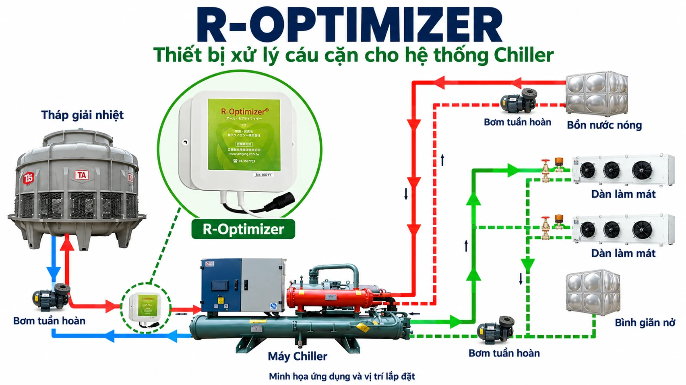
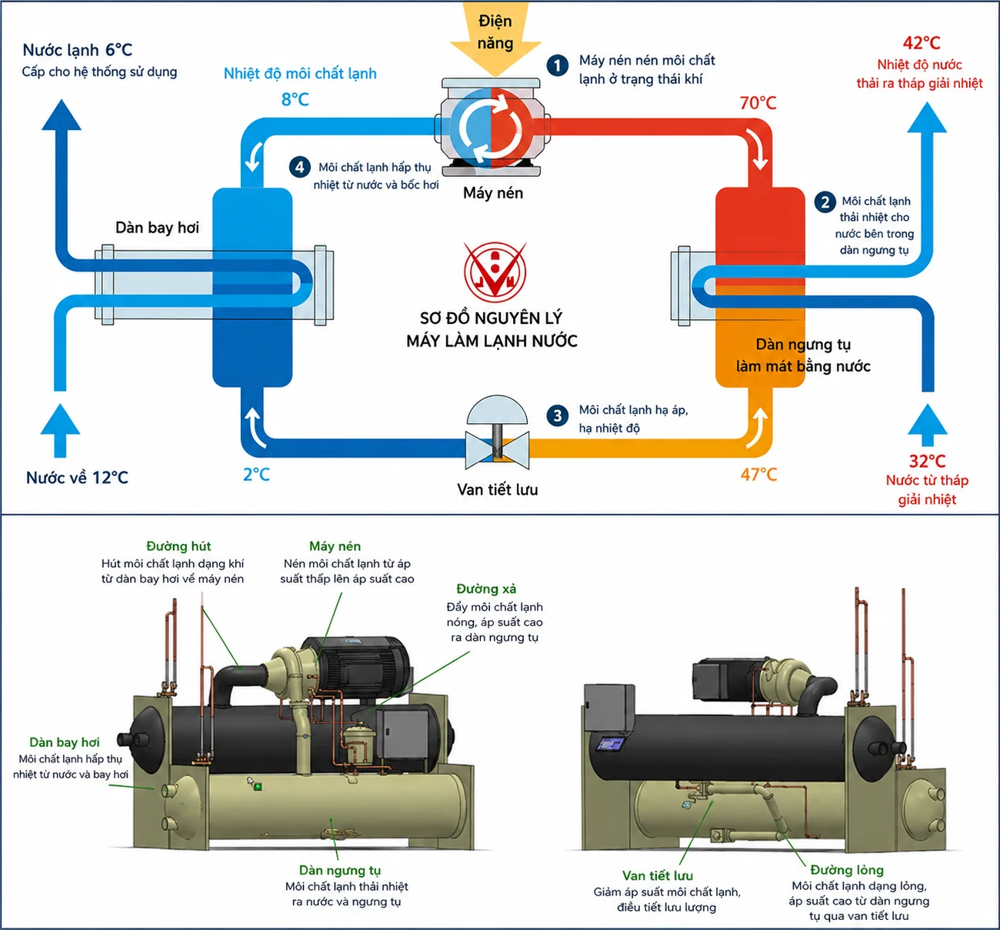
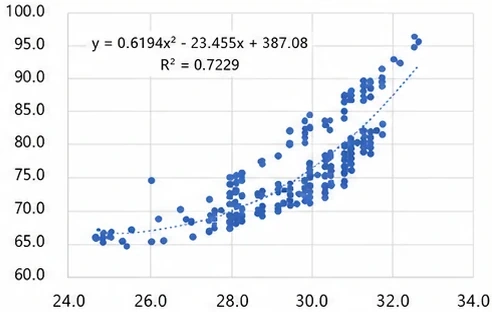
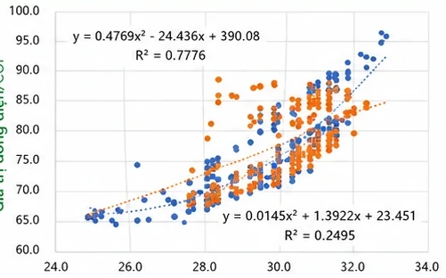
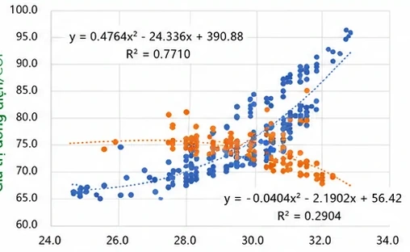

Lập dữ liệu nền
Ghi nhận điện năng, tải lạnh, nhiệt độ nước và thời gian vận hành trước triển khai.
R-OPTIMIZER / HONG MING GLOBAL
Đánh giá hệ thống chiller và điều hòa trung tâm từ điều kiện vận hành thực tế. Xác định vị trí lắp đặt và theo dõi hiệu quả bằng dữ liệu trước–sau.
Trao đổi về R-Optimizer ↗

Máy nén, dàn ngưng, van tiết lưu và dàn bay hơi tạo thành chu trình làm lạnh. Tài liệu xác định các điểm triển khai trên đường môi chất và đường dầu của chiller.
Xác nhận model, công suất, loại môi chất, lượng dầu, chế độ tải và sơ đồ đường ống. Phương án được xác định cho từng máy, theo điều kiện hiện trường.
Đầu vào bộ bay hơi, đầu ra dàn ngưng tụ, đầu ra máy nén và ống dầu môi chất. Các ảnh hiện trường bên dưới minh họa cách bố trí dây, điện cực và tủ điện.
Ví dụ thi công trong tài liệu dùng nguồn 110/220 V và một tủ điện cho mỗi chiller. Cấu hình nguồn và số điểm lắp cần được kỹ thuật xác nhận khi khảo sát.
Ảnh trích từ tài liệu giới thiệu do Hong Ming cung cấp. Tên khách hàng và kỳ đo không được xác định cho từng ảnh.
12 trường hợp được liệt kê theo ngành, thiết bị, môi chất và thời gian vận hành. Bảng gốc mang tiêu đề “R-Optimizer × Water Scale Go (DCI)” và không tách đóng góp của từng giải pháp.
| Khách hàng / ngành | Thiết bị | Môi chất | Tiết kiệm điện | Vận hành (năm) |
|---|---|---|---|---|
| Nhà máy bán dẫn | Điều hòa không khí | R410A | 22% | 1 |
| Nhà máy túi xách | Điều hòa không khí | R22 | 25% | 3 |
| Viện dưỡng lão C | Điều hòa không khí | R410A | 35% | 2 |
| Linh kiện tự động hóa | Chiller giải nhiệt nước | R407C | 34% | 2 |
| Nhà máy dệt | Chiller giải nhiệt nước | R407C | 24% | 2 |
| Nhà máy kim loại | Chiller giải nhiệt nước | R407C | 18% | 1 |
| Phòng máy tính | Chiller giải nhiệt gió | R410A | 28% | 2 |
| Khách sạn | Hệ thống làm lạnh | R410A | 10% | 2 |
| Thực phẩm A | Hệ thống làm lạnh | R410A | 34% | 3 |
| Thực phẩm B | Hệ thống làm lạnh | R22 | 22% | 1 |
| Nhà máy ô tô | Hệ thống làm lạnh | R410A | 9% | 1 |
| Trại cá | Hệ thống làm lạnh | R22 | 29% | 2 |
Nguồn: chell.pptx, trang nội bộ 39. Các dòng đang hiển thị nằm trong khoảng 9–35%. Phần tổng kết tài liệu gốc nêu 10–52% và trung bình khoảng 25%. Đây là số tham khảo trong tài liệu, chưa kèm bộ dữ liệu đo riêng cho từng trường hợp và không phải mức cam kết cho mọi nhà máy.
Ghi nhận điện năng, tải lạnh, nhiệt độ nước và thời gian vận hành trước triển khai.
So sánh ở điều kiện tải và nhiệt độ tương đương, theo phương pháp được thống nhất.
Theo dõi kW/RT và COP. kW/RT thấp hơn hoặc COP cao hơn phản ánh hiệu suất tốt hơn khi điều kiện so sánh tương đương.
Có thể thống nhất xác minh bởi đơn vị thứ ba. Tài liệu lưu ý thời gian và chi phí phụ thuộc yêu cầu xác minh.
Có thể áp dụng xác minh bởi đơn vị độc lập, chuyên gia điều hòa không khí hoặc kỹ sư theo thỏa thuận. Thời gian và chi phí phụ thuộc phạm vi xác minh.
Theo tài liệu, mô hình đối chiếu nhiệt độ nước làm lạnh đầu vào với giá trị dòng điện/COP. Dữ liệu trước, trong và sau cải thiện được so sánh với nhóm đối chứng và đường xu hướng để đánh giá sự thay đổi.
Dòng điện / COP (theo tài liệu)

Nhiệt độ nước làm lạnh đầu vào (°C)
Dòng điện / COP (theo tài liệu)

Nhiệt độ nước làm lạnh đầu vào (°C)
Dòng điện / COP (theo tài liệu)

Nhiệt độ nước làm lạnh đầu vào (°C)
Biểu đồ phương pháp trong tài liệu là minh họa xu hướng trước, trong và sau cải thiện. Không dùng biểu đồ này làm kết quả đo của một khách hàng cụ thể.
Danh sách chiller, hãng và model, năm sản xuất, môi chất và lượng nạp, loại dầu và lượng dầu máy nén. Chuẩn bị hóa đơn điện 1–3 năm gần nhất cùng dữ liệu điện riêng của hệ thống lạnh nếu có.
Xác định đầu mối phụ trách, ngân sách dự kiến và thời gian triển khai mong muốn để kỹ thuật xây dựng phạm vi khảo sát.
Trao đổi về R-Optimizer ↗Các biểu mẫu và hình kỹ thuật gốc giữ nguyên ngôn ngữ trong tài liệu.